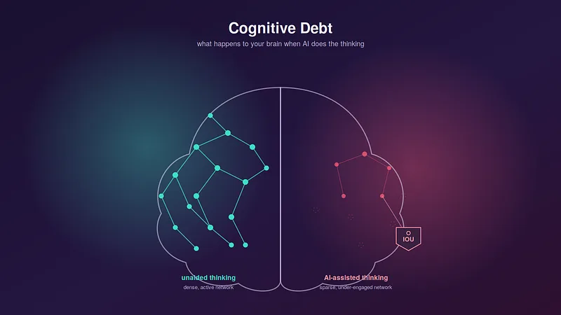

Cognitive Debt: The Real Price You Pay Every Time You Let AI Think For You


Cognitive Debt: The Real Price You Pay Every Time You Let AI Think For You
There’s a number that should worry you more than any AI benchmark: zero. That’s roughly how much mental effort it takes to get a decent-looking essay, summary, or answer out of a chatbot today. No struggling with a blank page. No wrong turns. No friction at all.
💥 Master AI & Tech Skills 🎓 Get Up to 50% OFF Premium Courses ⏰ Limited-Time Offer 👉 Enroll Now & Start Learning

For years, “less friction” was the whole promise of technology. But a growing body of research suggests that when it comes to thinking, the friction was never the problem. It was the point.
The Study That Coined a New Term
In the summer of 2025, a team at MIT’s Media Lab, led by researcher Nataliya Kosmyna, ran an experiment that would go on to reshape how people talk about AI and the mind. Over four months, 54 participants were split into three groups and asked to write a series of SAT-style essays: one group could only use their own brain, one could use a search engine, and one could use ChatGPT.
Each participant wore an EEG headset while writing, so researchers could track brain activity across 32 regions in real time. The essays were then scored blind by both human teachers and an AI grader.
The results lined up almost too neatly. The brain-only group showed the strongest, most widely distributed neural connectivity. The search-engine group came in the middle. The ChatGPT group showed the weakest connectivity of the three — consistently, across every session.
The researchers gave this pattern a name: cognitive debt. The idea is simple and a little unsettling. Every time you offload a mental task to an AI tool, you save effort right now — but you defer the cost. And like any debt, it accumulates interest.
What “Debt” Actually Buys You — and Costs You

The MIT team didn’t stop at brain scans. They also looked at what happened when the setup was flipped in a fourth session — participants who had relied on the AI were asked to write unaided, and vice versa.
The AI-to-brain group struggled. Having leaned on ChatGPT in earlier sessions, they showed weaker recall and had a harder time engaging critically with their own essay topics — even ones they’d already written about. The brain-to-AI group, on the other hand, adapted well: having built up their own reasoning first, they were able to use the AI as a genuine supplement rather than a substitute.
Human graders, working blind, independently noticed something too: essays written with heavy AI assistance tended to read as generic — technically correct, but short on a distinct point of view. Ask ten people to lean fully on the same tool for the same prompt, and you tend to get ten versions of the same essay.
This tracks with a broader pattern researchers have been documenting. A 2025 survey of knowledge workers, published at the CHI conference, found that people who trusted AI outputs more reported putting in less critical thinking effort — while people who felt more confident in their own expertise engaged more critically, AI or not. The tool itself isn’t the variable. Your relationship to it is.
Why This Isn’t Really About Essays
It’s tempting to file this under “students using ChatGPT to cheat,” but the MIT researchers were careful to frame cognitive debt as a broader phenomenon, not an academic integrity problem. The same mechanism shows up anywhere effortful thinking has an AI-shaped shortcut available:
In writing — outsourcing the first draft means outsourcing the thinking-through-writing process, not just the typing.
In coding — accepting a suggested fix without tracing why the bug happened trades a fixed symptom for an unlearned lesson.
In decision-making — asking AI to weigh your options can quietly replace the harder, slower work of clarifying what you actually value.
In learning anything new — if the effortful retrieval step disappears, so does most of the memory formation that step was creating.
None of this means the tool is bad. It means the tool is strong — strong enough that how you use it matters more than whether you use it.
Paying It Down: What Calibrated Use Looks Like

The MIT researchers weren’t arguing for avoiding AI tools altogether — their own paper notes that the search-engine group, which also relied on an external tool, showed no measurable impairment. The difference wasn’t “tool use”; it was how much of the actual thinking got handed over.
A few habits seem to separate healthy reliance from accumulating debt:
Do the first pass yourself. Even a rough, five-minute attempt at a problem before consulting AI preserves the retrieval-and-struggle process that builds memory and understanding.
Ask “why,” not just “what.” Requesting an explanation alongside an answer keeps you in the loop as a reasoner instead of a copier.
Rotate who’s driving. Use AI to check your work sometimes, and use your own judgment to check the AI’s work other times.
Notice when you stop noticing. If you’ve caught yourself pasting an answer without reading it, that’s the moment cognitive debt is compounding.
The Bigger Picture
Every previous tool that reduced mental effort — calculators, GPS, spell-check — sparked some version of this same debate, and humanity adapted by deciding which skills were safe to offload and which weren’t worth losing. AI is forcing that same negotiation, just faster and across far more of daily thinking than any tool before it.
The MIT study is preliminary — a modest sample, a narrow task, and a result that other researchers have already started to scrutinize and debate. But the core question it raises isn’t preliminary at all: when convenience is unlimited, what do you actually want to stay good at?
That’s not a question AI can answer for you. Answering it yourself might be exactly the kind of thinking worth not outsourcing.
Sources: Kosmyna et al., “Your Brain on ChatGPT: Accumulation of Cognitive Debt when Using an AI Assistant for Essay Writing Task,” MIT Media Lab / arXiv, 2025; Lee et al., “The Impact of Generative AI on Critical Thinking,” CHI 2025 Proceedings. This article reflects publicly available research as of September 2026.
Thank you for being a part of the community
Before you go:

👉 Be sure to clap and follow the writer ️👏️️
👉 Follow us: Medium
👉 CodeToDeploy Tech Community is live on Discord — Join now!
Disclosure: This post includes affiliate and partnership links.
Cognitive Debt: The Real Price You Pay Every Time You Let AI Think For You was originally published in CodeToDeploy on Medium, where people are continuing the conversation by highlighting and responding to this story.
Explore my technical writing services and research samples or learn more about Soumi Ganguly.